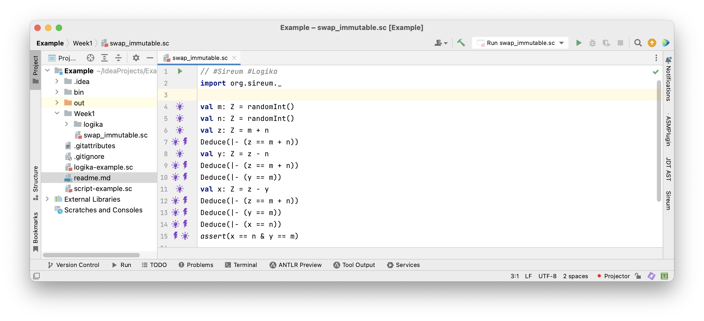
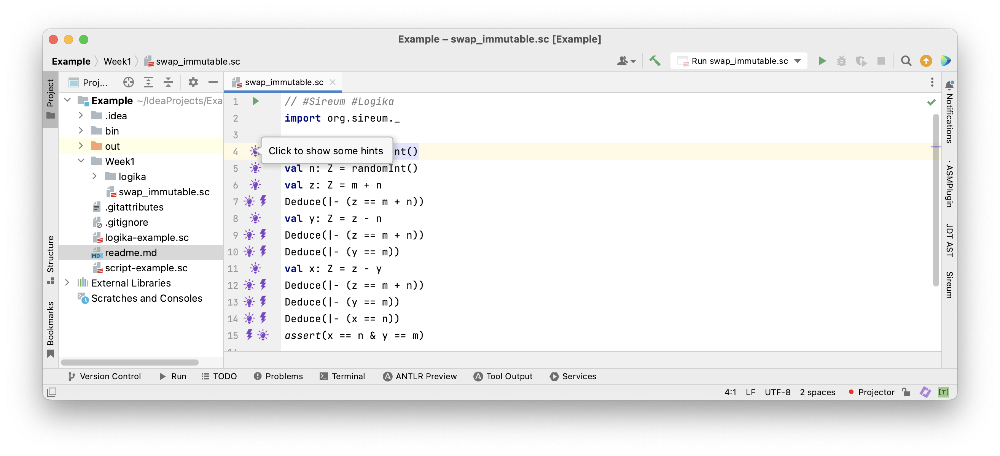
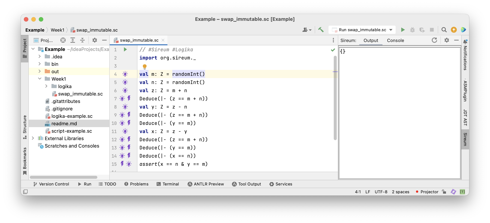
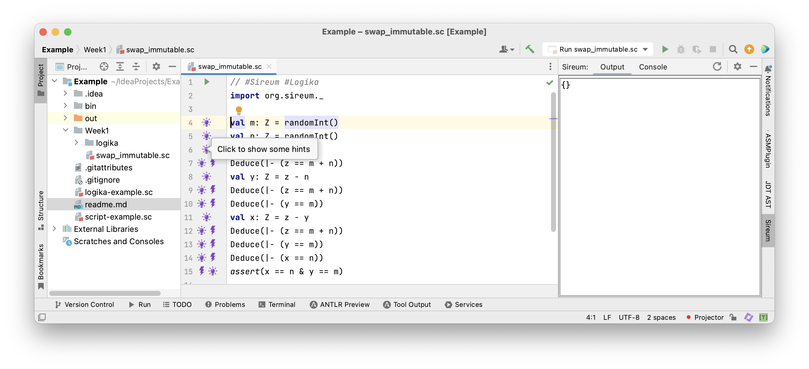
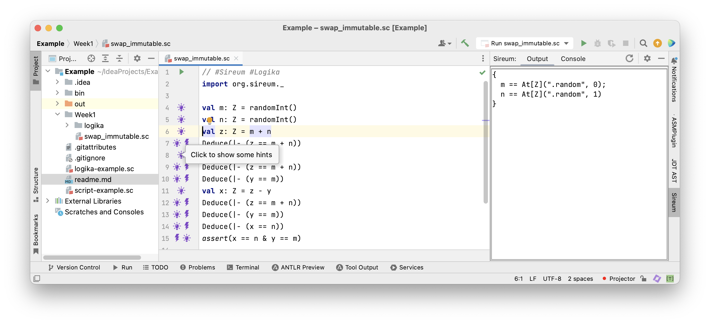
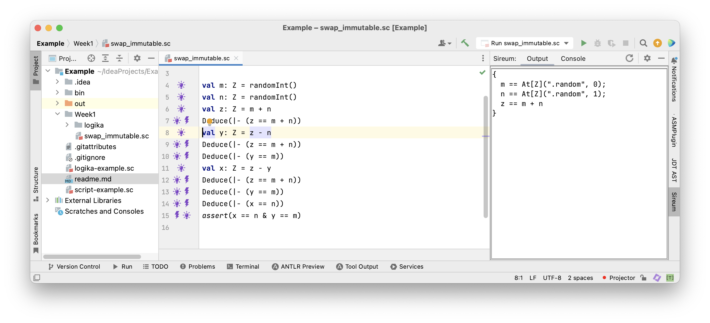

Lecture Summary: Tracing Facts
Execution as Calculation
A common way to consider a program is to trace its execution following the values that variables take at different times. We do this when debugging programs, where we predict the values of variables and observe deviations. In other words, we calculate “in our heads” expected values and compare them to those produced by program execution. We can follow a similar approach directly without executing a program: we can state expected values by asserting them and compare them to those produced by calculation. Let’s look at an example.
Example: Execution as Calculation
1val m: Z = 3
2val n: Z = 5
3val z: Z = m + n
4val y: Z = z - n
5val x: Z = z - y
6assert(x == 5 & y == 3)
The program above initialises variable m to 3 and variable n to 5.
At the end, it asserts that variable x equals 5 and variable y equals 3.
Instead of using intermediate assertions (as done in the last lecture) we can state in interspersed comments which variable values we can deduce (calculate “in our heads”). We insert lines:
// deduce v == e & w == f & ...
Specifying the deduced value e of variable v, f of variable w and so on.
1val m: Z = 3
2// deduce m == 3
3val n: Z = 5
4// deduce m == 3 & n == 5
5val z: Z = m + n
6// deduce m == 3 & n == 5 & z == 8
7val y: Z = z - n
8// deduce m == 3 & n == 5 & z == 8 & y == 3
9val x: Z = z - y
10// deduce m == 3 & n == 5 & z == 8 & y == 3 & x == 5
11assert(x == 5 & y == 3)
Note that in this example, since all variables are assigned only once we can focus our attention on the value of each “new” variable because each previously assigned variable retain its same value.
The calculation yields y == 3 & x == 5, i.e., the calculation confirms the expected values stated in the final assertion.
Discussion
Starting from concrete values, we have calculated the values of the variables during the execution of the program.
This is easy! We have documented the values that we “know” by writing // deduce .... We have shown that the program is correct for the provided values.
What if we wouldn’t know the initial values of variables m and n? In Slang we can express this by writing.
1val m: Z = randomInt()
2val n: Z = randomInt()
Function randomInt() specifies that an arbitrary integer value is chosen.
Execution as Calculation Limitations
1val m: Z = randomInt()
2val n: Z = randomInt()
3val z: Z = m + n
4val y: Z = z - n
5val x: Z = z - y
6assert(x == n & y == m)
The method for tracing values by calculation does not work if the specific values of the variables are not known. It is also not enough to limit deductions to specific variable values. We need to trace more general kinds of facts that constrain possible values of variables. A specific variable value is just a special kind of fact that constrains a variable to one value. Let’s consider this example in more detail.
Example: Deducing Facts for Immutable Variables
1val m: Z = randomInt()
2val n: Z = randomInt()
3val z: Z = m + n
4val y: Z = z - n
5val x: Z = z - y
6assert(x == n & y == m)
There’s nothing to deduce from the first two assignments except that m and n have arbitrary values.
The first “interesting” fact that we can deduce follows the assignment to z.
After this assignment z must equal m + n.
We deduce z == m + n corresponding directly to the assignment z = m + n.
Let’s insert a comment introducing this fact.
1val m: Z = randomInt()
2val n: Z = randomInt()
3val z: Z = m + n
4// deduce z == m + n
5val y: Z = z - n
6val x: Z = z - y
7assert(x == n & y == m)
We can see immediately that there is such a fact directly deducible from each assignment. Let’s add those.
1val m: Z = randomInt()
2val n: Z = randomInt()
3val z: Z = m + n
4// deduce z == m + n
5val y: Z = z - n
6// deduce y == z - n
7val x: Z = z - y
8// deduce x == z - y
9assert(x == n & y == m)
However, this is not yet enough in order to deduce x == n and y == m.
Because each variable is assigned only once, we can use “old facts”.
Observe, that the variable z is referred to after the assignments to y and x.
We can use that fact z == m + n there.
1val m: Z = randomInt()
2val n: Z = randomInt()
3val z: Z = m + n
4// deduce z == m + n
5val y: Z = z - n
6// deduce z == m + n
7// deduce y == z - n
8val x: Z = z - y
9// deduce z == m + n
10// deduce x == z - y
11assert(x == n & y == m)
Now, we joint facts like z == m + n and y == z - n.
From this we can deduce y == (m + n) - n.
We deduce further y == m + (n - n), and further y == m + 0.
Thus, y == m.
1val m: Z = randomInt()
2val n: Z = randomInt()
3val z: Z = m + n
4// deduce z == m + n
5val y: Z = z - n
6// deduce z == m + n
7// deduce y == m
8val x: Z = z - y
9// deduce z == m + n
10// deduce x == z - y
11assert(x == n & y == m)
The fact y == m is not affected by the assignment to x.
Hence, it remains true after that assignment.
1val m: Z = randomInt()
2val n: Z = randomInt()
3val z: Z = m + n
4// deduce z == m + n
5val y: Z = z - n
6// deduce z == m + n
7// deduce y == m
8val x: Z = z - y
9// deduce z == m + n
10// deduce y == m
11// deduce x == z - y
12assert(x == n & y == m)
From the joint facts z == m + n and y == m and x == z - y, we deduce x == (m + n) - y, further x == (m + n) - m,
and further x == (m - m) + n, and x == 0 + n, thus x == n.
1val m: Z = randomInt()
2val n: Z = randomInt()
3val z: Z = m + n
4// deduce z == m + n
5val y: Z = z - n
6// deduce z == m + n
7// deduce y == m
8val x: Z = z - y
9// deduce z == m + n
10// deduce y == m
11// deduce x == n
12assert(x == n & y == m)
From the joint facts z == m + n and y == m and x == z - y, we deduce x == (m + n) - y, further x == (m + n) - m,
and further x == (m - m) + n, and x == 0 + n, thus x == n.
1val m: Z = randomInt()
2val n: Z = randomInt()
3val z: Z = m + n
4// deduce z == m + n (consequence of assignment)
5val y: Z = z - n
6// deduce z == m + n (old fact)
7// deduce y == m (proof by algebra)
8val x: Z = z - y
9// deduce z == m + n (old fact)
10// deduce y == m (old fact)
11// deduce x == n (proof by algebra)
12assert(x == n & y == m)
Facts that we use to demonstrate program correctness come from different sources as indicated above. Knowledge about the program is gathered and increased by inferring new facts.
Discussion
We have generalised the approach of tracing values in programs to tracing facts. This has permitted us to demonstrate program correctness independently of variables’ initial values. Without much difficulty we have attained a much more powerful method to verify programs. We would expect that the maths that we have applied could also be carried out automatically. Let’s look at the program in Logika.
Tracing Facts with Logika
Restating the Program with dDeductions in Logika
1val m: Z = randomInt()
2val n: Z = randomInt()
3val z: Z = m + n
4// deduce z == m + n
5val y: Z = z - n
6// deduce z == m + n
7// deduce y == m
8val x: Z = z - y
9// deduce z == m + n
10// deduce y == m
11// deduce x == n
12assert(x == n & y == m)
In order to have Logika check the deductions they have to be uncommented and stated in Logika syntax.
1val m: Z = randomInt()
2val n: Z = randomInt()
3val z: Z = m + n
4Deduce(|- (z == m + n))
5val y: Z = z - n
6Deduce(|- (z == m + n))
7Deduce(|- (y == m))
8val x: Z = z - y
9Deduce(|- (z == m + n))
10Deduce(|- (y == m))
11Deduce(|- (x == n))
12assert(x == n & y == m)
That’s easy! We’ve simply put the facts inside Logika’s deduce commands. In order to tell Logika that it’s supposed to check this, a premise needs to be added.
1// #Sireum #Logika
2import org.sireum._
3
4val m: Z = randomInt()
5val n: Z = randomInt()
6val z: Z = m + n
7Deduce(|- (z == m + n))
8val y: Z = z - n
9Deduce(|- (z == m + n))
10Deduce(|- (y == m))
11val x: Z = z - y
12Deduce(|- (z == m + n))
13Deduce(|- (y == m))
14Deduce(|- (x == n))
15assert(x == n & y == m)
We add the comment and import at the top.
Logika
 The Program in the Sireum/Logika IVE
 Clicking on the light blub shows facts known at that program location
 Initially there aren’t any known facts

After the two assignments to m == randomInt() and n == randomInt() …
… it is only known that m and n have arbitrary values

Before the assignment to y …

… it is also known that z == m + n
Mutable Variables
So far, we have reasoned about programs with immutable variables that are only assigned a value once. This was helpful
- to learn about how facts propagate though programs
- to get a first impression of Logika
Next, we consider mutable variables that can be assigned a new value repeatedly. As a consequence, we need to distinguish old values from new values for the same variable. Let’s have a closer look.
From Immutable to Mutable Variables
|
|
This is the same program we have seen before.
We would like to rewrite the program in such a way that it swaps the values of variables x and y in-place.
Mutable variables are declared with the keyword var instead of val.
Example: Mutable Swapping
|
|
In this program x is assigned three times and y two times.
Let’s try our method for immutable variables.
- After the first assignment to
xwe would obtain the factx == m - After the second assignment to
xwe would obtain the factx == x + y - This is not right!
- The second assignment refers to the old value of
xon the right-hand side, relating to the factx == m - The left-hand side of that assignment refers to the new value
|
|
Let’s label the mutable variables according to the order in which they are assigned looking backwards from the final assertion x == n & y == m
|
|
Let’s label the mutable variables according to the order in which they are assigned.
We can refer to variables $v$ labelled by n by means of the expression At(v, n).
For the last assignment (with the largest label) we let At(v, n) == v.
Now, we can write in the comment behind each assignment the fact we deduce from it.
val m: Z = randomInt()
val n: Z = randomInt()
var x: Z = m // deduce At(x, 0) == m
var y: Z = n // deduce At(y, 0) == n
x = x + y // deduce At(x, 1) == At(x, 0) + At(y, 0)
y = x - y // deduce y == At(x, 1) - At(y, 0)
x = x - y // deduce x == At(x, 1) - y
assert(x == n & y == m)
Let’s label the mutable variables according to the order in which they are assigned.
We can refer to variables $v$ labelled by $n$ by means of the expression At(v, n).
For the last assignment (with the largest label) we let At(v, n) == v.
Now, we can write in the comment behind each assignment the fact we deduce from it.
The problem has disappeared and we can reason about the program as before.
We can apply this method to any location in a program, replacing variable up to that point.
Let’s see how this looks in Logika.